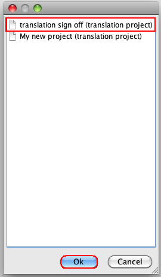

The project manager configures the main characteristics of the translation configuration that will apply to the whole project. Furthermore, each user will be able to configure a set of User's preferences but will not be able to change the prespecified ctranslation configuration.

- The list of projects will be displayed. The project manager should select one and press OK:

- The translation preferences pane is displayed and, when a project is selected, the project manager may define several translation preferences. Please, open the help hook in each of the translation preferences windows for further details.